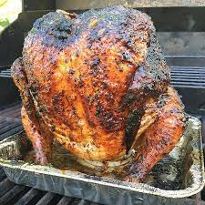

HOME
Beer Butt Chicken Recipe

Description:
On the grill, a whole chicken is seasoned and slowly cooked. This recipe is a little out of the ordinary, but the end result is moist, savory, and delicious. Chicken, butter, beer, and seasonings are all you'll need.
Ingredients:
- 1 Cup butter
- 2 Tablespoons garlic salt
- 2 Tablespoons paprika
- Salt and pepper to taste
- 1 (12 fluid ounce) can beer
- 1 (4 pound) whole chicken
Steps:
-
Preheat a low-heat outdoor grill.
-
Melt 1/2 cup butter in a small skillet.
1 tablespoon garlic salt, 1 tablespoon paprika, salt, and pepper are combined in a bowl.
-
Discard half of the beer and keep the rest in the can.
In a beer can, combine the remaining butter, garlic salt, paprika, and salt & pepper to taste.
Place the can on a baking sheet that can be thrown away.
Place the chicken on top of the can, which should be inserted into the cavity of the chicken.
Using the melted, seasoned butter, baste the chicken.
-
Place the baking sheet with the beer and chicken on the grill that has been preheated.
Cook for about 3 hours on low heat, or until the internal temperature of the chicken reaches 180 degrees F. (80 degrees C).